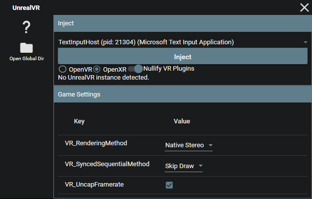
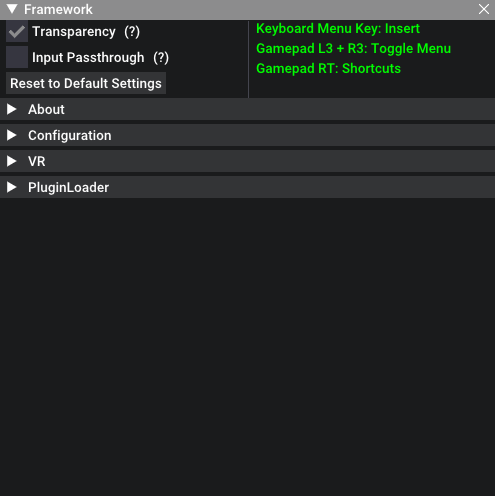

UnrealVR
Welcome to UnrealVR! This powerful tool will transform your favorite Unreal Engine games into 6DOF VR experiences with minimal effort.
Features
- Frontend GUI for easy process injection
- Supports OpenVR and OpenXR runtimes
- Native UE4/UE5 stereo rendering system for a truly immersive VR experience
- 3 rendering modes: Native Stereo, Synchronized Sequential, and Alternating/AFR
- Automatic handling of most in-game UI so it is projected into 3D space
- In-game menu with shortcuts for adjusting settings
- Access to various CVars for fixing broken shaders/effects
- Optional depth buffer integration for improved latency on some headsets
- Per-game configurations
- Plugin system for modders to add additional features like motion controls
Getting Started
- Launch the frontend GUI (UnrealVR.exe)
- Launch the target game
- Locate the game in the process dropdown list
- Select your desired runtime (OpenVR/OpenXR)
- Toggle existing VR plugin nullification (if necessary)
- Configure pre-injection settings
- Inject
In-Game Menu
Press the Insert key or L3+R3 on a controller to access the in-game menu, which opens by default at startup. With the menu open, hold RT for various shortcuts:
- RT + Left Stick: Move the camera left/right/forward/back
- RT + Right Stick: Move the camera up/down
- RT + B: Reset camera offset
- RT + Y: Recenter view
- RT + X: Reset standing origin
Additional information
Read the Detailed overview for a comprehensive guide on how to fine-tune your VR experience.
UnrealVR: In-Depth Guide
Dive deeper into the UnrealVR and learn how to fine-tune your VR experience with this comprehensive guide. We'll explore various settings, configurations, and troubleshooting tips to help you get the most out of your favorite Unreal Engine games in VR.
Frontend GUI
The frontend GUI provides an intuitive interface for injecting VR functionality into your chosen game. Here, you can:
- Select a process to inject into
- Choose your desired runtime (OpenVR/OpenXR)
- Toggle VR plugins (if necessary)
- Configure pre-injection settings

OpenVR or OpenXR?
OpenVR usually has the highest compatibility, but OpenXR usually gives higher performance when it works, especially if the headset has a native OpenXR runtime.
OpenVR requires SteamVR to be installed. OpenXR requires a valid OpenXR runtime for the headset, but can also run through SteamVR if SteamVR is set as the active runtime.
Pre-Injection Settings
Before injecting, you can customize the following settings:
VR_RenderingMethod: Choose from Native Stereo, Synchronized Sequential, or Alternating/AFRVR_SyncedSequentialMethod: Configure the behavior of the Synced Sequential rendering methodVR_UncapFramerate: Enable or disable framerate uncapping
After injection, the rest of the options will populate automatically. You can modify these settings in the in-game menu or through the config.txt file.

In-Game Menu
The in-game menu offers additional configuration options and shortcuts for adjusting settings on the fly. Access the menu by pressing the Insert key or L3+R3 on a controller.
The in-game menu can be accessed either inside the VR headset, or you can use the desktop view to adjust settings without having to put on a headset.


In-Game Shortcuts
While holding RT:
- RT + Left Stick: Move the camera left/right/forward/back
- RT + Right Stick: Move the camera up/down
- RT + B: Reset camera offset
- RT + Y: Recenter view
- RT + X: Reset standing origin
CVars and Fixes

Use the in-game menu to access and modify various CVars for fixing broken shaders and effects. The tool offers a range of options for addressing common rendering issues.
Depth Buffer Integration
While depth buffer integration is disabled by default, enabling it can greatly improve latency on Oculus headsets when using OpenXR with the native Oculus OpenXR runtime. To enable depth buffer integration, adjust the VR_EnableDepth setting.

Configurations
All configurations are stored on a per-game basis in the %APPDATA%/UnrealVRMod directory. You can modify settings directly in the UI or through the config.txt file. This directory can be accessed in the frontend GUI by clicking the "Open Global Dir" button.

Plugins
Plugins can be installed in the plugins folder in the game's configuration directory. Simply drop the plugin dll into it.
Troubleshooting & Optimization
Optimal performance and compatibility
- Tweak graphical settings in-game to reduce load
- Experiment with different rendering methods if you encounter rendering bugs or crashes
- Use the in-game menu and CVars to address shader and effect issues
- Enable depth buffer integration for improved latency on Oculus headsets (OpenXR only)
- Consider upgrading your system for the best experience with high-end AAA titles
Further tweaks can be done by modifying the game's INI files, using UUU, UE4SS, or other external tools. Various tweaks that have been made for the normal version of the games can be applied to the VR version as well.
For those with motion sickness
Enable "Decoupled Pitch" under the VR options. This will stop the camera from rolling or moving vertically.
UnrealVR: Plugin Development
This section covers the basics of developing plugins for UnrealVR. If you're looking for information on how to use UnrealVR, check out the Usage section.
Overview
Plugins in UnrealVR are developed primarily in C++. However, the API header is written in C. This means it's possible to bind it to other languages, or even just write them in C.
The API header is located in include/uevr/API.h.
The C++ API header is in include/uevr/API.hpp.
The base C++ plugin header is in include/uevr/Plugin.hpp.
Plugin Installation
In the frontend, click the "Open Global Dir" button. Locate the corresponding game directory, and place the DLL in the plugins folder.
During plugin development, you many want to create a symbolic link from the plugins dir to your project's DLL output directory. This way, you can build the plugin and have it automatically load into UnrealVR.
Plugin Lifecycle
Plugins are loaded and unloaded at runtime. The plugin lifecycle is as follows:
- UnrealVR starts its initialization process
- UnrealVR initially loads all plugins, and calls their
DLLMainfunctions- If the plugin is a C++ plugin, the DLLMain function will call the
on_dllmainfunction of the plugin
- If the plugin is a C++ plugin, the DLLMain function will call the
- UnrealVR begins initializing the rest of its own components
- After initialization, UnrealVR calls the
on_initializefunction of each plugin - During its execution loop, UnrealVR will call the various
on_*functions of each plugin - The user can choose to unload all plugins, and reload them at will at runtime
The easy way
Plugin.hpp provides a class that can be inherited from to create a plugin. This class provides a number of virtual functions that can be overridden to implement the plugin's functionality.
The way it is structured is also how you would use the API in C++ using the API.h and API.hpp headers.
Plugin.hpp also implements a DLLMain for you, so you don't have to worry about that. All you need to worry about is overriding the virtual functions.
The project must be compiled as a DLL.
A simple example
#include <memory>
#include "uevr/Plugin.hpp"
using namespace uevr;
#define PLUGIN_LOG_ONCE(...) \
static bool _logged_ = false; \
if (!_logged_) { \
_logged_ = true; \
API::get()->log_info(__VA_ARGS__); \
}
class ExamplePlugin : public uevr::Plugin {
public:
ExamplePlugin() = default;
void on_dllmain() override {}
void on_initialize() override {
// Logs to the appdata UnrealVRMod log.txt file
API::get()->log_error("%s %s", "Hello", "error");
API::get()->log_warn("%s %s", "Hello", "warning");
API::get()->log_info("%s %s", "Hello", "info");
}
void on_pre_engine_tick(UEVR_UGameEngineHandle engine, float delta) override {
PLUGIN_LOG_ONCE("Pre Engine Tick: %f", delta);
}
void on_post_engine_tick(UEVR_UGameEngineHandle engine, float delta) override {
PLUGIN_LOG_ONCE("Post Engine Tick: %f", delta);
}
void on_pre_slate_draw_window(UEVR_FSlateRHIRendererHandle renderer, UEVR_FViewportInfoHandle viewport_info) override {
PLUGIN_LOG_ONCE("Pre Slate Draw Window");
}
void on_post_slate_draw_window(UEVR_FSlateRHIRendererHandle renderer, UEVR_FViewportInfoHandle viewport_info) override {
PLUGIN_LOG_ONCE("Post Slate Draw Window");
}
};
// Actually creates the plugin. Very important that this global is created.
// The fact that it's using std::unique_ptr is not important, as long as the constructor is called in some way.
std::unique_ptr<ExamplePlugin> g_plugin{new ExamplePlugin()};
UnrealVR: Lua API
UnrealVR provides a Lua API that can be used to create plugins. This API is a wrapper around the C++ API, and is intended to be used by plugins written in Lua.
It is intended to be used within UE4SS, but can technically be used in any Lua environment.
This API is in its infancy, and is subject to change.
Example
local LuaVR = require("LuaVR")
local function vr_print(text)
print("[LuaVR Script] " .. text .. "\n")
end
local params = LuaVR.params
local callbacks = params.sdk.callbacks
local total_t = 0.0
-- Example usage of callbacks
callbacks.on_pre_engine_tick(function(engine, delta)
total_t = total_t + delta
end)
-- Modifies the camera position
callbacks.on_post_calculate_stereo_view_offset(function(device, view_index, world_to_meters, position, rotation, is_double)
position.z = position.z + 100.0
position.y = position.y - 100.0
end)
-- UEVR_PluginInitializeParam
-- UEVR_PluginVersion
vr_print("Major: " .. tostring(params.version.major))
vr_print("Minor: " .. tostring(params.version.minor))
vr_print("Patch: " .. tostring(params.version.patch))
-- UEVR_PluginFunctions
vr_print("Is drawing ui: " .. tostring(params.functions.is_drawing_ui()))
params.functions.log_info("Hello from LuaVR!")
params.functions.log_warn("Hello from LuaVR!")
params.functions.log_error("Hello from LuaVR!")
-- UEVR_VRData
vr_print("Runtime ready state: " .. tostring(params.vr.is_runtime_ready()))
vr_print("Is OpenVR: " .. tostring(params.vr.is_openvr()))
vr_print("Is OpenXR: " .. tostring(params.vr.is_openxr()))
vr_print("Is HMD Active: " .. tostring(params.vr.is_hmd_active()))
local standing_origin = UEVR_Vector3f.new()
params.vr.get_standing_origin(standing_origin)
vr_print("Standing Origin: " .. tostring(standing_origin.x) .. ", " .. tostring(standing_origin.y) .. ", " .. tostring(standing_origin.z))
local rotation_offset = UEVR_Vector3f.new()
params.vr.get_rotation_offset(rotation_offset)
vr_print("Rotation Offset: " .. tostring(rotation_offset.x) .. ", " .. tostring(rotation_offset.y) .. ", " .. tostring(rotation_offset.z))
local hmd_index = params.vr.get_hmd_index()
vr_print("HMD Index: " .. tostring(hmd_index))
local left_controller_index = params.vr.get_left_controller_index()
vr_print("Left Controller Index: " .. tostring(left_controller_index))
local right_controller_index = params.vr.get_right_controller_index()
vr_print("Right Controller Index: " .. tostring(right_controller_index))
local hmd_position = UEVR_Vector3f.new()
local hmd_rotation = UEVR_Quaternionf.new()
params.vr.get_pose(hmd_index, hmd_position, hmd_rotation)
vr_print("HMD Position: " .. tostring(hmd_position.x) .. ", " .. tostring(hmd_position.y) .. ", " .. tostring(hmd_position.z))
vr_print("HMD Rotation: " .. tostring(hmd_rotation.x) .. ", " .. tostring(hmd_rotation.y) .. ", " .. tostring(hmd_rotation.z) .. ", " .. tostring(hmd_rotation.w))
if left_controller_index ~= -1 then
local left_controller_position = UEVR_Vector3f.new()
local left_controller_rotation = UEVR_Quaternionf.new()
params.vr.get_pose(left_controller_index, left_controller_position, left_controller_rotation)
vr_print("Left Controller Position: " .. tostring(left_controller_position.x) .. ", " .. tostring(left_controller_position.y) .. ", " .. tostring(left_controller_position.z))
vr_print("Left Controller Rotation: " .. tostring(left_controller_rotation.x) .. ", " .. tostring(left_controller_rotation.y) .. ", " .. tostring(left_controller_rotation.z) .. ", " .. tostring(left_controller_rotation.w))
end
if right_controller_index ~= -1 then
local right_controller_position = UEVR_Vector3f.new()
local right_controller_rotation = UEVR_Quaternionf.new()
params.vr.get_pose(right_controller_index, right_controller_position, right_controller_rotation)
vr_print("Right Controller Position: " .. tostring(right_controller_position.x) .. ", " .. tostring(right_controller_position.y) .. ", " .. tostring(right_controller_position.z))
vr_print("Right Controller Rotation: " .. tostring(right_controller_rotation.x) .. ", " .. tostring(right_controller_rotation.y) .. ", " .. tostring(right_controller_rotation.z) .. ", " .. tostring(right_controller_rotation.w))
end
local left_eye_offset = UEVR_Vector3f.new()
local right_eye_offset = UEVR_Vector3f.new()
params.vr.get_eye_offset(0, left_eye_offset)
params.vr.get_eye_offset(1, right_eye_offset)
vr_print("Left Eye Offset: " .. tostring(left_eye_offset.x) .. ", " .. tostring(left_eye_offset.y) .. ", " .. tostring(left_eye_offset.z))
vr_print("Right Eye Offset: " .. tostring(right_eye_offset.x) .. ", " .. tostring(right_eye_offset.y) .. ", " .. tostring(right_eye_offset.z))
local is_using_controllers = params.vr.is_using_controllers()
vr_print("Is Using Controllers: " .. tostring(is_using_controllers))